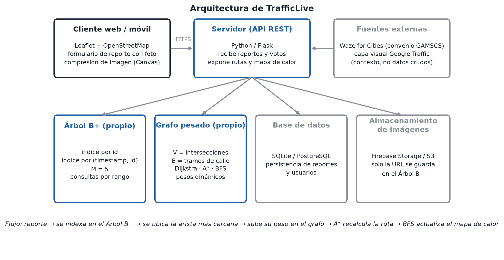

Proyecto N° 55 · Feria Científica FICCT – UAGRM · Estructura de Datos 2
Árboles B+ y Grafos Pesados para reportar y evitar atascos en Santa Cruz de la Sierra
Los ciudadanos reportan incidentes con foto. Un Árbol B+ con doble índice guarda el historial y lo consulta por identificador o por rango de horas. La red vial real de la ciudad, tomada de OpenStreetMap, se modela como un grafo pesado dirigido, y A* recalcula tu ruta en milisegundos cuando una calle se congestiona.
- Búsqueda por ID
- ×1.522 Árbol B+ frente a una lista enlazada, con 100.000 reportes
- Búsqueda por rango
- ×119 en "reportes de la última hora"
- A* en la red real
- −49 % nodos explorados frente a Dijkstra, con la misma ruta óptima
- Recálculo de ruta
- < 20 ms peor caso medido en la red real de Santa Cruz
- Fotos comprimidas
- −98 % de 3,5 MB a 58 KB en promedio, dentro del celular
01 · El problema
Una ciudad de anillos que crece más rápido que sus calles
En una red radio-concéntrica, un accidente en un anillo no se queda ahí: la congestión se desborda hacia las radiales y los anillos vecinos. Por eso TrafficLive propaga cada reporte por el grafo con BFS.
02 · Demo en vivo
La red vial real de Santa Cruz, como grafo dirigido
Son las avenidas principales de OpenStreetMap: cargando…. Las vías de un solo sentido y los carriles separados de los anillos son aristas dirigidas. Pasa el cursor sobre una calle para ver su peso.
ruta A*ruta anterior
congestiónsevera
mapa de calor (BFS)
Consulta por rango sobre el índice temporal del Árbol B+
Historial simulado del día con 400 reportes, con más carga en las horas pico. La clave es (minuto del día, id); un segundo Árbol B+ indexa por id.
03 · Cómo funciona
El Árbol B+, paso a paso
Los nodos internos solo guían la búsqueda. Los datos viven en las hojas, y las hojas están enlazadas: una consulta por rango baja una sola vez, en O(log n), y luego avanza de hoja en hoja, en O(k), sin volver a subir.
04 · Resultados medidos
Lo que dicen los números
Benchmark reproducible, con semilla fija y estructuras implementadas desde cero en Python. Los ejes de los gráficos del Árbol B+ son logarítmicos.
Cuadrícula sintética frente a red real
La red real (OpenStreetMap) es dirigida: el 89 % de sus tramos son de un solo sentido. Promedio de 200 rutas.
Compresión de fotos en el cliente
5 fotos reales de calles cruceñas (Wikimedia Commons). Lado mayor de 800 px y JPEG con calidad 0,7, medido en el navegador.
Con 100.000 reportes, la consulta por rango es al menos 10 veces más rápida que en la lista enlazada. Medido: ×119 → se acepta
A* encuentra la misma ruta que Dijkstra explorando al menos un 30 % menos de nodos. Medido: −48 a −51 % (cuadrícula) y −49 % (red real) → se acepta
El recálculo tras un reporte tarda menos de 100 ms. Medido: 17,4 ms (10.000 nodos) y 19,8 ms (red real) → se acepta
05 · Metodología
Investigación aplicada con diseño experimental
Enfoque cuantitativo. La lista enlazada y Dijkstra son el grupo de control; el Árbol B+ y A* son el tratamiento. Las hipótesis tienen umbrales fijados antes de medir.
- Independientes: la estructura de indexación, el algoritmo y el tamaño de la entrada.
- Dependientes: el tiempo por consulta, los nodos expandidos, el tiempo de recálculo y el tamaño de la imagen.
- Muestra: de 1.000 a 100.000 reportes, grafos de 100 a 10.000 nodos, la red real de 3.517 intersecciones y 5 fotos.
- Validación: 20.000 operaciones del Árbol B+ contrastadas con un diccionario en 5 órdenes, y A* frente a Dijkstra en todas las rutas.
Construido con software y datos abiertos
OpenStreetMap · Overpass APILeaflet 1.9.4Leaflet.heatChart.js 4.4.1
PuppeteerPython 3.14Wikimedia CommonsVercel

06 · Equipo
Autores del proyecto
Docente tutor: Ing. MSc. Juan Carlos Peinado Pereira · Estructura de Datos 2 · FICCT – UAGRM
07 · Descargas